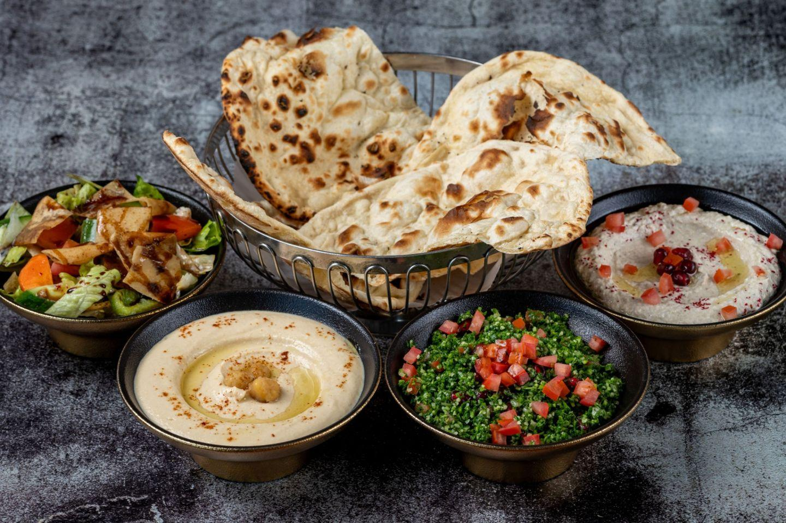

From the kitchen
Hawler Journal
Guides to Kurdish and Iraqi charcoal cooking, bread, hospitality and eating well on Edgware Road — written for curious diners, not marketing copy.

All articles
Read on

Technique
Charcoal Grilling: How the Mangal Shapes Kurdish and Iraqi Kebab
Real charcoal — not a flat griddle — gives Hawler’s kebabs their crust, aroma and pace. Here is what that method means for your order.

Culture
Kurdish Hospitality at the Table: Why the Welcome Comes First
Complimentary starters, shared platters and unhurried tea — how Kurdish hospitality shapes a meal at Hawler on Edgware Road.

Dishes
Slemani Naan and the Bread That Carries the Meal
Warm flatbread is essential to Kurdish and Iraqi eating — at Hawler, Slemani naan arrives complimentary for dine-in and stays within reach of every grill.

Guides
Middle Eastern Starters Worth Ordering: Mezze, Salads and Kibbeh
From complimentary hummus and salad to fattoush, baba ganoug and kibbeh — how to open a meal at Hawler the right way.

Culture
Hawler and Erbil: The Name Behind the Restaurant
Hawler is the Kurdish name for Erbil, capital of the Kurdistan Region — and the heritage reference for this Edgware Road grill house.

Guides
How to Order an Iraqi Mixed Grill at Hawler
Build a mixed grill the Kurdish-Iraqi way: choose your shish, share the salad and naan, and let charcoal set the pace of the table.

Dishes
What Is Slemani Kebab? Minced Lamb from the Charcoal Grill
Slemani Kabab is Hawler’s minced lamb kebab — two charcoal shish with salad and naan — named for the grilling tradition of Sulaymaniyah.

Dishes
What Is Kuzi? The Slow Lamb Dish at the Heart of the Menu
Kuzi (also spelled Qozi) is slow-cooked lamb with rice and sauce — Hawler’s comforting counterpoint to the charcoal grill.

Guides
A Guide to Kurdish Flavours: What to Order First
New to Kurdish and Iraqi cooking? Start with charcoal kebabs, slow Kuzi, Slemani naan and the complimentary welcome that defines Hawler.